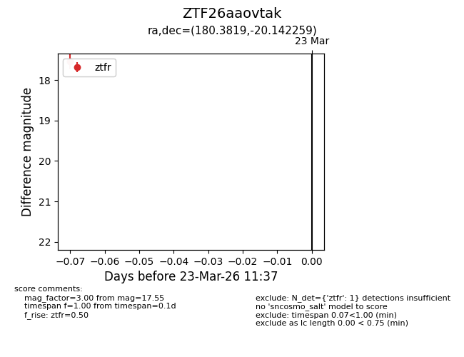
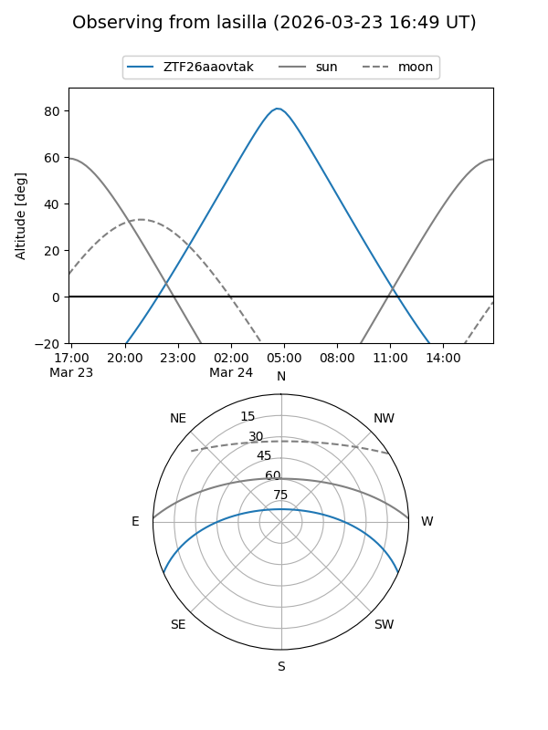
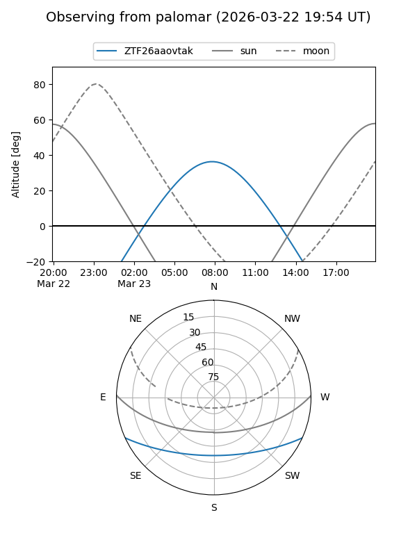

ZTF26aaovtak
Target ZTF26aaovtak at 2026-03-23 11:39
Aliases and brokers:
FINK: link
Lasair: link
ALeRCE: link
alt names
ZTF26aaovtak (ztf,fink_ztf)
Coordinates:
equatorial (ra, dec) = 180.3819,-20.14226
equatorial (HMS+DMS) = 12:01:31.65,-20:08:32.13
galactic (l, b) = (287.2899,+41.20860)
Flags:
Photometry:
last ztfr=17.55
1 ztfr detections
Lightcurve

Visibility


Additional plots